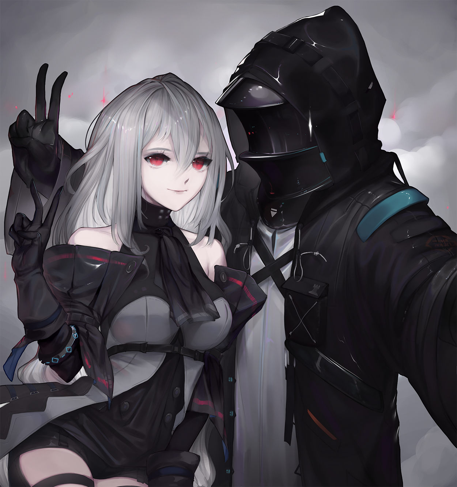
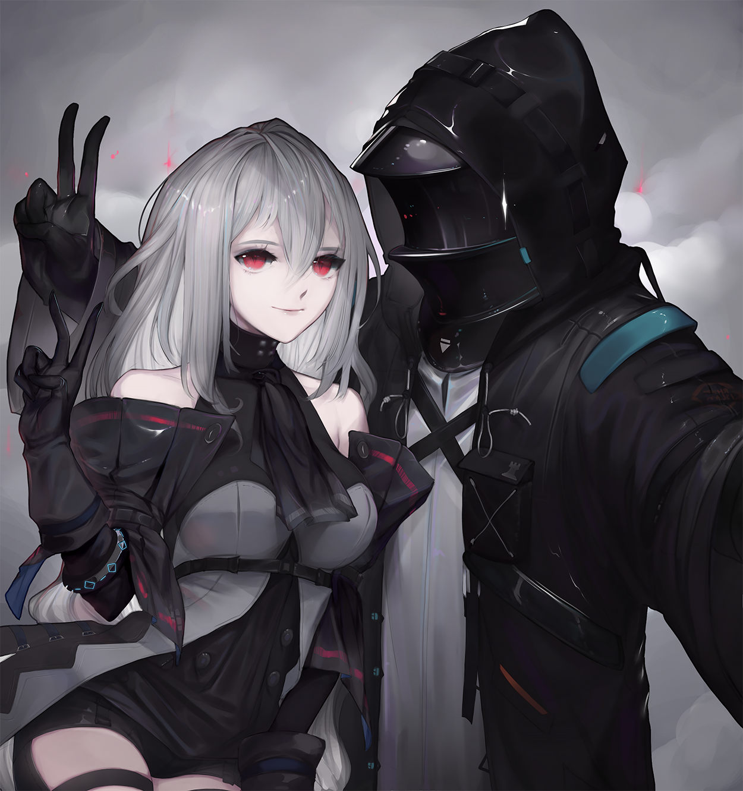
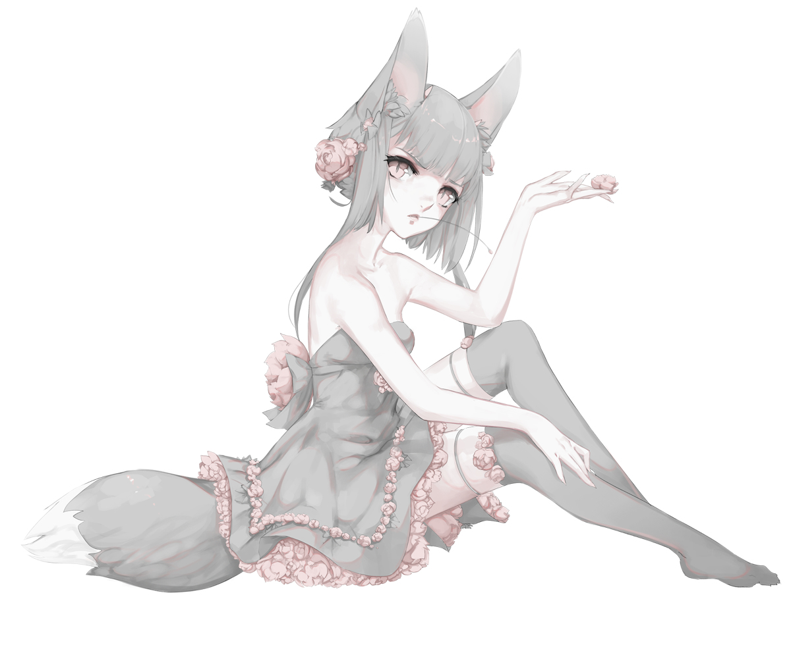
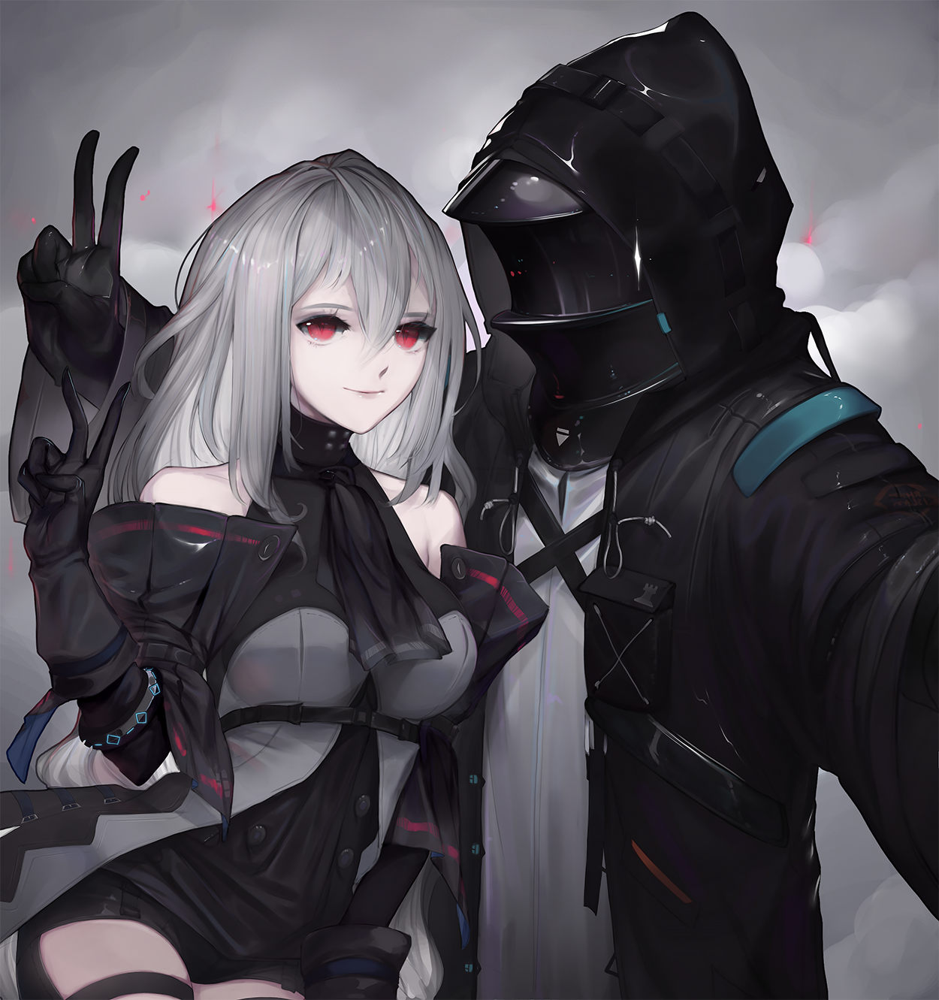

I am a freelance 2D digital character artist and designer and a Digital Media Art student at San Jose State University.
I've drawn and loved creating art all my life but have begun to take digital illustration more seriously over the past few years.
Alongside continually working to improve my skills, I've recently been pursuing ways to augment my illustrations, presently as 2.5D animation through Live2D, After Effects, and other digital tools.
Email me at meghan.e.landry@gmail.com
Or contact me on any of the sporadically checked and updated social media listed below.